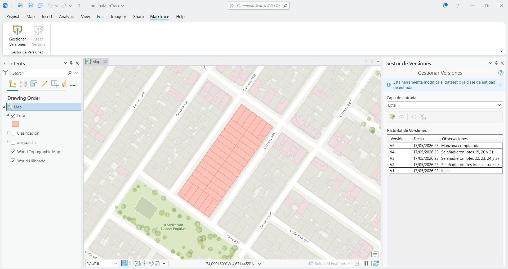

Gestionar Versiones
Resumen
MapTrace es un Add-In para ArcGIS Pro 3.6 que proporciona un mecanismo de control de versiones local para capas vectoriales (FeatureLayer) y raster (RasterLayer) almacenadas en geodatabases de archivos (FileGDB). La herramienta permite crear instantáneas incrementales de los datos — denominadas versiones — identificadas con un número secuencial (V1, V2, V3…), una fecha y hora, y una nota de observación libre redactada por el usuario. Cada versión es una copia completa e independiente del conjunto de datos en el momento en que se capturó.
El problema que MapTrace resuelve es la ausencia de un control de cambios nativo para geodatabases locales en ArcGIS Pro: sin esta herramienta, cualquier modificación sobre un dataset es irreversible a menos que el usuario haya realizado manualmente copias de respaldo con nombres y fechas ad hoc. MapTrace automatiza ese proceso, organiza las copias en una geodatabase auxiliar de instantáneas y permite restaurar cualquier versión anterior con un solo clic.
Utilice MapTrace cuando trabaje con ediciones iterativas de capas geográficas en FileGDB y necesite mantener un historial trazable de los cambios: digitalización de cartografía, ajuste de geometrías, actualización de atributos, o cualquier flujo de trabajo donde sea importante poder revertir el estado de la capa a un punto anterior bien documentado.
Requisitos
| Requisito | Detalle |
|---|---|
| ArcGIS Pro 3.6 o superior | El Add-In fue compilado con el SDK de ArcGIS Pro 3.6. No se garantiza compatibilidad con versiones anteriores. |
| Tipo de capa compatible | FeatureLayer (capa vectorial) o RasterLayer cuyo origen sea una FileGDB local o en ruta de red. |
| Capa cargada en el mapa | Para crear la primera versión, la capa debe estar cargada en la tabla de contenidos (TOC) del proyecto activo de ArcGIS Pro. |
Las geodatabases corporativas (SDE / Enterprise Geodatabase), servicios de entidades (Feature Services), capas de Living Atlas, WFS, WMS y capas de red no son compatibles con MapTrace. La herramienta opera exclusivamente sobre archivos FileGDB.
Vista del panel

El panel Gestor de Versiones se abre desde la pestaña MapTrace en la cinta de ArcGIS Pro.
Cómo abrir el panel
Una vez instalado el Add-In, ArcGIS Pro añade automáticamente la pestaña MapTrace a la cinta principal. Esta pestaña contiene dos controles:
- Gestionar Versiones — abre el panel flotante Gestor de Versiones, que centraliza todas las operaciones de creación, visualización, restauración y eliminación de versiones.
- Crear Versión — acceso directo para capturar una instantánea rápida de la capa seleccionada en la tabla de contenidos, sin necesidad de abrir el panel completo.
Elementos del panel
El panel Gestor de Versiones agrupa todos los controles necesarios para administrar el historial de versiones de una capa. A continuación se describe cada elemento.
ComboBox "Capa de entrada"
Lista desplegable ubicada en la parte superior del panel. Muestra todas las capas válidas del proyecto activo cuyo origen sea una FileGDB: FeatureLayers y RasterLayers. Las capas de servicios o bases de datos corporativas se excluyen automáticamente.
Adicionalmente, el ComboBox incluye las capas huérfanas: capas que tienen versiones guardadas en una geodatabase de instantáneas pero que ya no están cargadas en el proyecto activo. Estas capas aparecen debajo de un separador visual, en texto gris e itálico. Si la geodatabase de origen de una capa huérfana ya no existe en disco, aparece el icono ⚠ junto al nombre.
Ejemplo ilustrativo. Las capas en gris e itálico son huérfanas.
Botones de acción
Los cuatro botones de acción se encuentran agrupados en una barra de iconos ubicada debajo del ComboBox. Todos los botones se deshabilitan automáticamente cuando no existe una selección válida o cuando hay una operación en curso.
| Botón | Función | Condiciones de habilitación |
|---|---|---|
| Crea una nueva instantánea de la capa seleccionada en el ComboBox. Solicita una nota de observación antes de proceder. | Capa activa en el TOC, sin fuente de datos rota, sin operación en curso. | |
Carga una copia de solo lectura de la versión seleccionada en una geodatabase temporal. La capa de vista se agrega al mapa con el prefijo [VISTA] y conserva la simbología de la capa original. |
Versión seleccionada en el historial, sin operación en curso. | |
| Restaura el estado de los datos al correspondiente a la versión seleccionada. Pregunta si se desea guardar el estado actual antes de proceder. Si el esquema difiere, muestra un aviso detallado. | Versión seleccionada en el historial, sin operación en curso. | |
| Elimina la versión o versiones seleccionadas del historial y de la geodatabase de instantáneas. Solicita confirmación. La acción es irreversible. | Una o más versiones seleccionadas, sin operación en curso. |
Historial de Versiones
Tabla que muestra todas las versiones guardadas para la capa seleccionada. Contiene tres columnas:
| Columna | Descripción |
|---|---|
| Versión | Identificador secuencial de la instantánea (V1, V2, V3…). |
| Fecha | Fecha y hora de creación en formato dd/MM/yyyy HH:mm. Ordena cronológicamente al hacer clic en la columna. |
| Observaciones | Nota libre introducida por el usuario al crear la versión. |
Haga clic en una fila para seleccionarla. Use Ctrl+clic o Shift+clic para seleccionar múltiples filas (habilitado únicamente para la operación de eliminación).
Flujo de trabajo
Crear una versión
- Abra el panel Gestor de Versiones desde la pestaña MapTrace en la cinta.
- En el ComboBox Capa de entrada, seleccione la capa de la que desea guardar una instantánea.
- Haga clic en el botón Crear Versión (ícono de la barra de acciones).
- En el diálogo, escriba una observación descriptiva del estado actual. La observación puede dejarse en blanco, aunque se recomienda documentar cada versión.
- Haga clic en Aceptar. La barra de progreso indica el avance de la operación.
- Al finalizar, la nueva versión aparece en el historial con su número, fecha y observación.
Cree una versión antes de iniciar cualquier sesión de edición significativa. De este modo siempre dispondrá de un punto de retorno limpio al que regresar si los cambios no resultan satisfactorios.
Ver una versión
- En el historial, seleccione la versión que desea examinar.
- Haga clic en el botón Ver Versión.
- MapTrace copia la instantánea a una geodatabase temporal y la agrega al mapa activo con el prefijo
[VISTA]. La capa conserva la simbología de la capa original. - Examine los datos en el mapa. La capa de vista es de solo lectura: cualquier edición realizada sobre ella no afecta las instantáneas guardadas ni la capa operacional.
- Para cerrar la vista, elimine la capa
[VISTA]de la tabla de contenidos como haría con cualquier capa de ArcGIS Pro.
Si abre una nueva vista mientras otra ya está activa, la primera se cierra automáticamente. Solo puede haber una capa de vista activa por sesión.
Restaurar una versión
- En el ComboBox, seleccione la capa que desea restaurar.
- En el historial, haga clic en la versión a la que desea volver.
- Haga clic en el botón Restaurar Versión.
- El sistema pregunta si desea guardar el estado actual antes de restaurar. Elija Sí para crear una versión de respaldo automática, No para proceder sin guardar, o Cancelar para abortar.
- Si el esquema de la versión difiere del esquema actual (campos distintos), aparece un aviso detallando los campos que se añadirán o eliminarán. Confirme para continuar.
- La barra de progreso indica el avance. Al terminar, la capa en el mapa refleja el estado de la versión restaurada.
La restauración sobreescribe los datos actuales de la capa. Si elige No al preguntarse si desea guardar el estado actual, los cambios no guardados se perderán de forma permanente. No existe función de deshacer para esta operación.
Eliminar una versión
- En el historial, seleccione la versión o versiones a eliminar. Para seleccionar varias, use Ctrl+clic o Shift+clic.
- Haga clic en el botón Eliminar Versión.
- Confirme la eliminación en el diálogo.
- Las versiones seleccionadas se eliminan de la geodatabase de instantáneas y del historial. La operación no puede deshacerse.
La eliminación de versiones es irreversible. Asegúrese de no necesitar esas versiones antes de confirmar.
Para liberar espacio en disco de forma controlada, elimine únicamente las versiones intermedias o de prueba más antiguas, y conserve siempre las versiones correspondientes a hitos importantes del proyecto.
Capas huérfanas
Una capa huérfana es una capa que tiene versiones guardadas en una geodatabase de
instantáneas (Snapshots_*.gdb), pero que ya no está cargada en la tabla de contenidos del
proyecto activo. Esto puede ocurrir si la capa fue eliminada del proyecto, si el proyecto fue compartido
sin incluir esa capa, o si se cambió el nombre o la ruta de la capa original.
MapTrace detecta automáticamente las capas huérfanas y las incluye en el ComboBox debajo de un separador, en texto gris e itálico. Si la geodatabase de origen ya no existe en disco, el nombre muestra el icono ⚠. MapTrace maneja tres escenarios al restaurar una versión huérfana:
Escenario A – La GDB existe pero el dataset fue eliminado
La geodatabase de origen sigue presente, pero el dataset fue eliminado. MapTrace restaura directamente la versión y añade la capa resultante al mapa activo automáticamente.
Escenario B – La GDB y el dataset existen
Tanto la GDB como el dataset siguen presentes. MapTrace pregunta si se desea guardar el estado actual como versión antes de proceder. Luego sobreescribe los datos y deja la capa en el mapa.
Escenario C – La GDB de origen ya no existe
La GDB fue eliminada o movida (indicado por ⚠). MapTrace pregunta al usuario si desea recrearla en la ruta original. Si confirma, recrea la GDB y procede como en el Escenario A.
Si la capa pertenecía originalmente a un Feature Dataset dentro de la GDB, MapTrace respeta esa estructura y realiza la restauración dentro del mismo Feature Dataset.
Almacenamiento de versiones
Geodatabase de snapshots
Cada GDB de origen tiene asociada una geodatabase de snapshots, creada automáticamente en la misma carpeta con la convención:
Snapshots_[NombreGDB].gdb
Por ejemplo, si la GDB de origen se llama CartografiaUrbana.gdb, la geodatabase de snapshots
se denominará Snapshots_CartografiaUrbana.gdb. No es necesario crearla manualmente.
Tabla de metadatos
Dentro de la geodatabase de snapshots, MapTrace mantiene una tabla interna llamada
_MapTrace_Metadata con los siguientes campos por cada versión:
- Número de versión (V1, V2…)
- Nombre del FeatureClass o dataset raster
- Fecha y hora de creación
- Observación introducida por el usuario
- Nombre del Feature Dataset contenedor (si aplica)
No modifique la tabla _MapTrace_Metadata manualmente. Cualquier alteración directa puede
causar inconsistencias entre el historial mostrado en el panel y las instantáneas almacenadas en la GDB.
Consideraciones de espacio en disco
Cada versión es una copia completa del dataset en el momento de la captura; no se utiliza ningún mecanismo diferencial. El espacio consumido crece de forma proporcional al tamaño del dataset por cada versión creada. Para datasets grandes, el número de versiones debe gestionarse con prudencia.
Elimine periódicamente las versiones intermedias o de prueba para liberar espacio, conservando únicamente las versiones correspondientes a hitos significativos del proyecto.
Limitaciones
- Solo FileGDB: MapTrace opera exclusivamente sobre geodatabases de archivos (FileGDB), ya sean locales o en ruta de red. Las geodatabases corporativas (SDE / Enterprise Geodatabase), servicios de entidades, capas de Living Atlas y capas web no son compatibles.
- Capa cargada en el proyecto: Para crear la primera versión de una capa, esta debe estar cargada en la tabla de contenidos. Las capas huérfanas solo pueden restaurarse, no generar versiones nuevas desde el panel.
- Sin cancelación de operación en curso: Una vez iniciada una operación, no existe botón de interrupción. Espere a que la barra de progreso desaparezca antes de continuar.
- Sin función de deshacer: Ni la eliminación de versiones ni la restauración pueden deshacerse mediante Ctrl+Z de ArcGIS Pro.
- Sin gestión de ramas ni resolución de conflictos: MapTrace no implementa versionado con ramas. Cada versión es una línea temporal única y secuencial.
- Copias completas: Cada versión ocupa el mismo espacio que el dataset completo. Para datasets de gran tamaño, gestione el número de versiones cuidadosamente.
- Capas en edición activa: Si la capa tiene una sesión de edición abierta en el momento del rollback, la operación puede fallar por conflicto de acceso al archivo. Guarde y cierre la sesión de edición antes de restaurar.
- Sin cifrado ni control de acceso: La geodatabase de snapshots es una FileGDB estándar sin mecanismos de cifrado. Cualquier usuario con acceso a la carpeta puede leer las snapshots directamente.